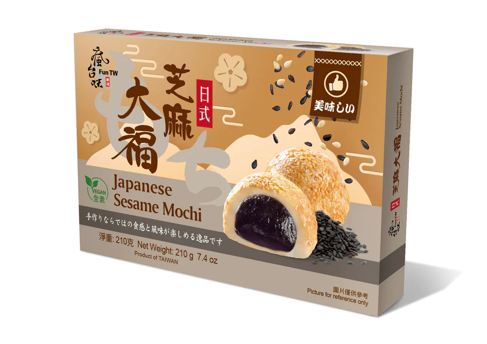
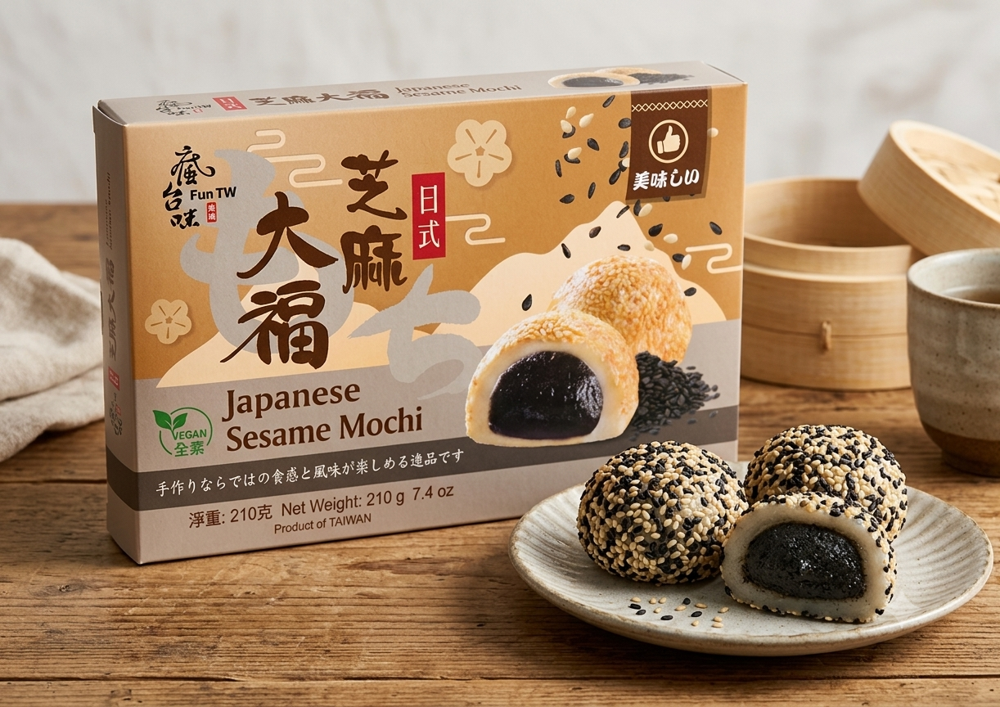

<div> <table style="border-collapse: collapse; width: 99.9809%;" border="1"><colgroup><col style="width: 49.9522%;"><col style="width: 49.9522%;"></colgroup> <tbody> <tr> <td> <div><span style="font-size: 14pt;"><strong>Desert Mochi cu pasta de Susan</strong></span></div> <div><span style="font-size: 14pt;"><strong>210g</strong></span></div> <div><span style="font-size: 14pt;">Descopera desertul traditional asiatic intr-o cutie eleganta, ideala pentru momentele tale de rasfat sau pentru a fi oferita cadou. Ambalajul pastreaza prospetimea si aroma autentica a fiecarei prajiturele mochi, promitand o calatorie culinară memorabila direct in Taiwan.</span></div> </td> <td></td> </tr> <tr> <td></td> <td><span style="font-size: 14pt;">Priveste interiorul cremos si invelisul generos de susan alb si negru! Textura extrem de moale si elastica ascunde o umplutura bogata, dulce si aromata, oferind o combinatie perfecta intre finetea aluatului de orez si nota crocanta a semintelor.</span></td> </tr> </tbody> </table> </div>